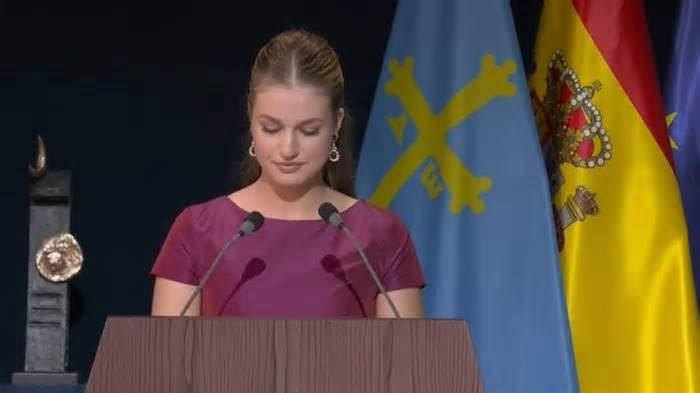

Asturias, cumbre cultural en octubre: los premios Princesa atraen al Principado a figuras como Mendoza o Serena Williams

La Fundación Princesa de Asturias está inmersa en una frenética actividad este mes de octubre para cubrir todos los detalles de las actividades programadas con motivo de los premios que concede ...
La Fundación Princesa de Asturias está inmersa en una frenética actividad este mes de octubre para cubrir todos los detalles de las actividades programadas con motivo de los premios que concede ...
Noticia publicada por eldiario.es. Consulta el artículo original en eldiario.es para más información.